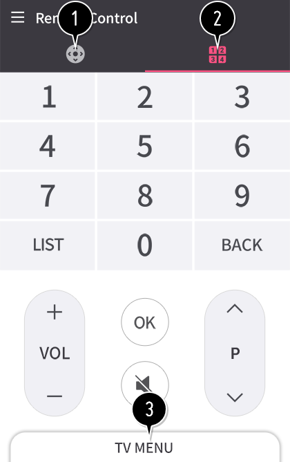

Conexión móvil
Puede utilizar diversas funciones conectando la TV a un dispositivo inteligente.
Conexión de su dispositivo inteligente a una TV mediante a la aplicación LG TV Plus
-
Descargue la aplicación LG TV Plus de la tienda de aplicaciones en el dispositivo inteligente.
Puede descargar la aplicación fácilmente escaneando el código QR.AndroidiOS - Conecte el televisor y el dispositivo inteligente a la misma red Wi-Fi.
- Ejecute la aplicación LG TV Plus instalada en el dispositivo inteligente.
-
Siga las instrucciones de la aplicación LG TV Plus para conectar su dispositivo inteligente a la TV.
Puede comprobar el dispositivo inteligente conectado en Panel de casa de la TV.
Control de la TV con la aplicación LG TV Plus
Puede tocar los botones de la pantalla de su dispositivo inteligente para controlar la TV.

- Puede utilizar las mismas funciones que el puntero del mando a distancia Mágico y las teclas de flecha.
- Puede cambiar de canal, ajustar el volumen o realizar otros ajustes sin utilizar el mando a distancia mientras ve una retransmisión.
- Puede abrir una aplicación instalada en la TV o configurar los ajustes de funciones como cambiar de entrada o añadir canales favoritos.
Algunos controles pueden estar limitados en el modo de entrada externa.
Las funciones y la imagen de la pantalla están sujetas a cambios sin previo aviso.
Las funciones disponibles pueden variar en función del país y el sistema operativo.
Compartir contenido con la aplicación LG TV Plus
Puede compartir y disfrutar de los contenidos almacenados en el dispositivo inteligente a través de un televisor.
- Ejecute la aplicación LG TV Plus instalada en el dispositivo inteligente.
- Configure el contenido deseado en el televisor.
Problemas con el uso compartido del contenido que requieren atención
Compruebe la configuración de red si la opción de uso compartido de contenido no funciona correctamente.
Puede que no funcione correctamente en una red inalámbrica. Se recomienda que se conecte a una red por cable.
Es posible que no funcione correctamente en función del entorno de red.
Las funciones compatibles pueden variar en función de la versión y fabricante del sistema operativo del dispositivo inteligente.
Para ver vídeo de 1080p a través de la función de uso compartido de contenido, es necesario un router que utilice una frecuencia de al menos 5 GHz. Si se utiliza un router de 2,4 GHz, puede que el vídeo no se reproduzca correctamente.
Es posible que los subtítulos no sean compatibles con algunos archivos.
Los archivos DRM no se pueden reproducir.
Si una carpeta contiene demasiadas subcarpetas o archivos, es posible que no funcione de forma correcta.
La información del archivo podría no mostrarse correctamente.
En función de la codificación, es posible que algunos flujos no se reproduzcan en el modo de compartir contenido.